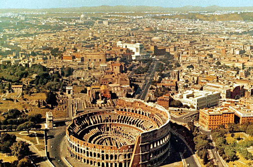
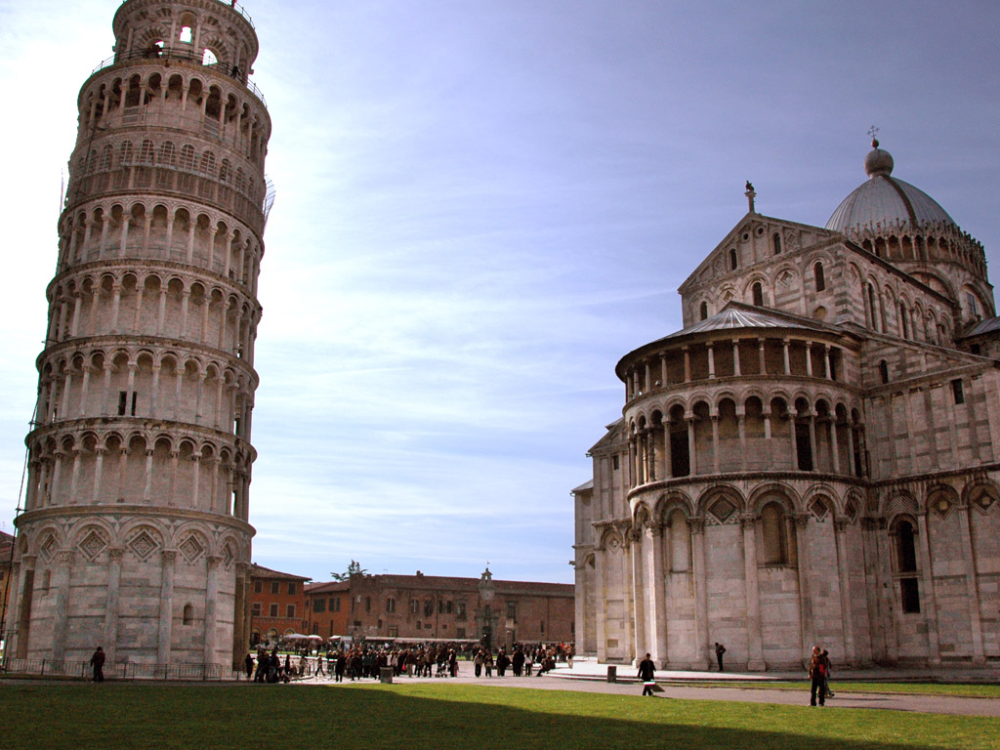
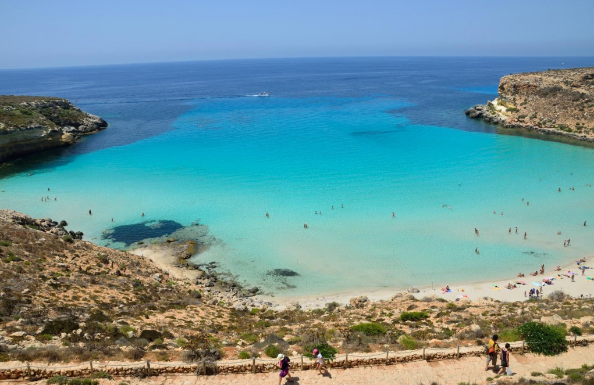
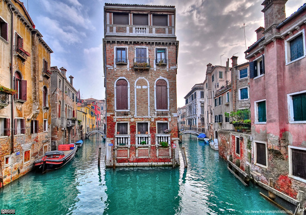
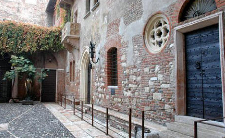
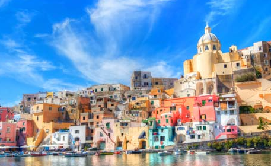

Italy - The boot-shaped country
These are many places that you should visit in a trip to
Italy.
Rome
Rome is the capital of the Italian Republic. It is the largest and
most populated city in Italy and one of Europe’s major capitals.
Rome enjoys a Mediterranean climate with mild, humid winters and
hot, dry summers.

Over 16% of the world’s cultural treasures are located in Rome
(70% in all of Italy). It is the city with the highest
concentration of historical and architectural assets in the world.
Its historical centre, delineated by the Aurelian Walls, has a
heritage of nearly three thousand years and. This is the ideal
destination for people who crave to explore the invaluable
testimony of Western Europe’s cultural, artistic and historical
legacy.
Today, the city of Rome is one of the most important tourist destinations of the
world, due to its immense archaeological and artistic treasures,
as well as for the charm of its unique traditions, the beauty of
its panoramic views, and the majesty of its magnificent "villas"
(parks). Among the most significant resources are the many
museums. Therefore, Rome is the third most visited city in the EU,
after London and Paris, and receives an average of 7–10 million
tourists a year, which sometimes doubles on holy years.
In 1980 the centre of Rome was added to UNESCO’s World Heritage List, along with
the Holy See’s property, beyond the confines of the Vatican State,
as well as the Basilica of St. Paul outside the Walls.
Pisa
Located behind the cathedral of Pisa in Italy, the Tower of Pisa
is a world famous construction and also the icon of Italy. The
building was constructed in 177 years. In 1773, it started to sink
because of the out-dated substructure and it was not reconstructed
until the mid-14th century by Italian engineers. In 2001, the
tower of Pisa with 296 steps was reopened for tourists.

Sicilia
Located in the south, Sicilia is an autonomous region of Italy. It
is the largest region in Italy, with 25 708 km² and currently has
5 million residents. Sicilia is also the largest island in the
Mediterranean. Also, many smaller islands surrounding this area
belong to this region, such as the Aeolian island in the north,
Egadi and Pelagie in the west and Pantelleria in the south.
- In the history, Sicilia has strategically important role due to
its influence to the Mediterranean trade routes.
- It is also famous with the macabre mafia (the most notorious is
Camorra in the Naples)
- They produce the world's most delicious citrus fruits in Sicilia (with the
seed taken from Africa since long ago)

Rabbit Beach (Isola del coniglio), Lampedusa, Sicily –
Lampedusa
is the largest island of the Italian Pelagie
Venice
Known as “City of Water”, Venice, often also called Venezia is a
romantic site to tourists who love to experience the gondola trip
on a dreaming canal. Along the banks, numerous Italian building
structures make the image of the Grand Canal become more beautiful
than ever. Venice is famous to be one of the leading tourist
attractions of Italy by the charm and romance.

Verona
Juliet's house in Verona is an attractive place for tourists. It
would not be considered hard to find Casa di Giulietta (Juliet's
house) because there are many directions in every corner in the
streets.Behind the entrance, on both sides of the road leads to
the backyard, there are walls and you can see lot of names written
by lovers on over the world in various languages.

The house was built in Gothic style, take the wooden staircase and
you will reach 9 rooms decorated in Aristocratic. In 1936, people
built a balcony for this old house to attract more tourists
In contrast, Romeo Montague's house in St. Visa Arche Scaligere is totally
different, there's only a few people visiting this place. Behind
the walls inside the house, there are many loopholes and some
parts of this house are not opened for exhibiting. But you can
come to a restaurant nearby to have a closer look because some
rooms of this house remain there.
Outside the door, people carved a famous saying of Romeo on the beginning of the
play "I have lost myself, I am not here, this is not Romeo, he's
some other where".
Napoli
This is where the first pizza ever was born. Now it is known
worldwide under the brand name "Da Machele". Napoli is also the
former capital of Italy. There is almost no snow all year round;
Napoli’s climate is comfortable even when the temperature goes up
to 40◦C. Another special thing about this place: there’s a
fireworks display once every day. Some believe that it is the
Mafia’s signal to each other.
